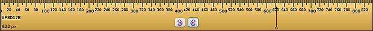
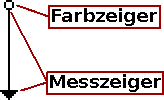
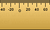
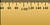

KRuler
Dieser Artikel wurde für die folgenden Ubuntu-Versionen getestet:
Ubuntu 14.04 Trusty Tahr
Zum Verständnis dieses Artikels sind folgende Seiten hilfreich:
KRuler  ist ein Programm, um Abstände oder Farbwerte auf dem Desktop zu ermitteln. Dazu stellt es ein Lineal zur Verfügung, welches frei auf dem Desktop bewegt und gedreht werden kann. Ein spezieller Mauszeiger ermöglicht die Ermittlung der pixelgenauen Position auf dem Lineal und zeigt zudem den hexadezimalen Wert einer auf dem Desktop befindlichen Farbe an.
ist ein Programm, um Abstände oder Farbwerte auf dem Desktop zu ermitteln. Dazu stellt es ein Lineal zur Verfügung, welches frei auf dem Desktop bewegt und gedreht werden kann. Ein spezieller Mauszeiger ermöglicht die Ermittlung der pixelgenauen Position auf dem Lineal und zeigt zudem den hexadezimalen Wert einer auf dem Desktop befindlichen Farbe an.
|  |
| Lineal in mittlerer Größe mit Drehknöpfen und speziellem Mauszeiger. |
Installation¶
kruler ist Teil des Metapaketes kdegraphics, kann aber auch einzeln installiert [1] werden:
kruler
 mit apturl
mit apturl
Paketliste zum Kopieren:
sudo apt-get install kruler
sudo aptitude install kruler
Bedienung¶
 Nach Start des Programms [2] erscheint das Lineal auf dem Bildschirm. Fährt man mit der Maus über das Lineal, wandelt sich der Mauszeiger in eine Art Pfeil mit unterschiedlichen Enden:
Spitze: Dient dazu, den genauen Pixelwert an dieser Position zu ermitteln
Kreis: Dient dazu, einen Farbwert zu ermitteln.
Die ermittelten Werte werden auf dem Lineal dargestellt.
Mittels gedrückter  lässt sich das Lineal beliebig auf dem Desktop verschieben. Bei
lässt sich das Lineal beliebig auf dem Desktop verschieben. Bei  erscheint das Kontextmenü mit weiteren Einstellungsmöglichkeiten.
erscheint das Kontextmenü mit weiteren Einstellungsmöglichkeiten.
Messungen¶
Bei den Messungen ist zu beachten, dass die Werte der Messspitze immer in Bezug zum Null-Punkt des Lineals stehen. Die Messwerte werden auf dem Lineal dargestellt.
Lineal drehen¶
Über "Ausrichtung" kann das Lineal gedreht werden:
"Nord": Waagerecht, Messskala oben
"Ost": Senkrecht, Messskala rechts
"Süd": Waagerecht, Messskala unten
"West": Senkrecht, Messskala links
Ausserdem stehen noch einfache Drehungen im oder gegen den Uhrzeigersinn zur Verfügung.
Null-Punkt verschieben¶
|  |  |
| -45, das Lineal fängt bei -45 an | 35, das Lineal fängt bei 35 an |
Über "Skalieren -> Verschiebung" lässt sich der Null-Punkt des Lineals beliebig verschieben. Der hier eingegebene Wert stellt den Anfangswert des Lineals ein. Negative Werte verschieben den Null-Punkt nach rechts, positive nach links.
Farbwerte auslesen¶
Um einen Farbwert zu ermitteln, lässt man den Kreis des speziellen Mauszeigers aus dem Lineal herausragen. Der Hex-Wert der Farbe kann dann einfach mittels Strg + C in die Zwischenablage kopiert werden.
Weitere Möglichkeiten¶
Das Kontextmenü bietet noch eine Reihe weiterer Einstellungen und Besonderheiten, die hier nur kurz angerissen werden sollen:
Länge des Lineals einstellen
Lineal durchsichtig machen
Null-Punkt zentrieren
Der Einrichtungsdialog umfasst u.a. folgende Einstellungsmöglichkeiten:
Hintergrundfarbe des Lineals festlegen
Schriftart festlegen
Drehen-Knöpfe auf dem Lineal anzeigen
- Erstellt mit Inyoka
-
 2004 – 2017 ubuntuusers.de • Einige Rechte vorbehalten
2004 – 2017 ubuntuusers.de • Einige Rechte vorbehalten
Lizenz • Kontakt • Datenschutz • Impressum • Serverstatus -
Serverhousing gespendet von